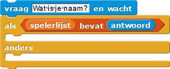

Namen van spelers leren
Op deze pagina ga je een groet speler-script maken dat gebruikers begroet
en hun namen onthoudt, zodat nieuwe bezoekers een andere begroeting krijgen dan terugkerende
bezoekers.
- Conditionelen. De
als-andersblokken maken een keuze.

Dezealsenals-andersblokken worden conditionelen genoemd. - Voorwaarde. Conditionelen besturen code aan de hand van een voorwaarde.
Hier is die voorwaarde of de naam van de speler inspelerslijststaat. - Selectie. Een selectie is selecteren welk gedeelte van een algoritme uitgevoerd moet worden, gebaseerd op een voorwaarde.
- Rangschikken is het proces van het ordenen van de code (het in een volgorde plaatsen), zoals je dat hier gaat doen.
-

Het bevat de meeste code die je nodig hebt om het script te maken. - Voeg de blokken samen in een volgorde zodat:
- De groeter zal
vragenom de speler zijn/haar naam. - Als deze naam in
spelerslijststaat,Zeg"leuk je weer te zien, naam speler."
- Anders, wanneer de speler niet op de lijst staat,
Zeg"leuk je te ontmoeten, naam speler," enVoegde naam toe aanspelerslijst.
- De groeter zal
- Test en debug. Zorg ervoor dat het script werkt zoals je wilt.
- Maak een command-blok, en sleep je script hierin.
- Klik meerdere keren op
groet_spelerom te testen of het naar behoren werkt. Fix alle bugs die je eventueel nog tegenkomt.